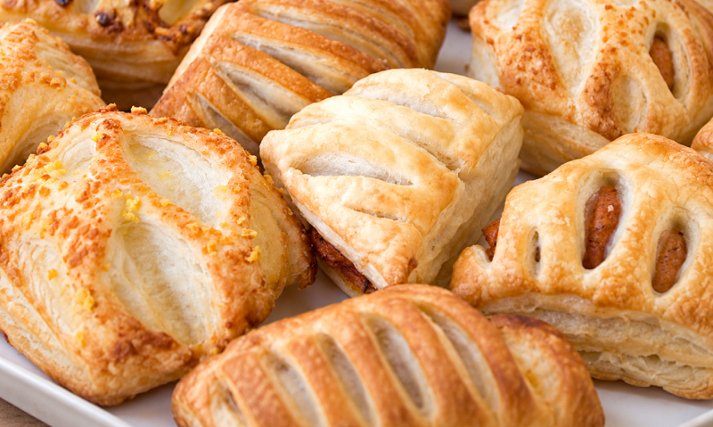
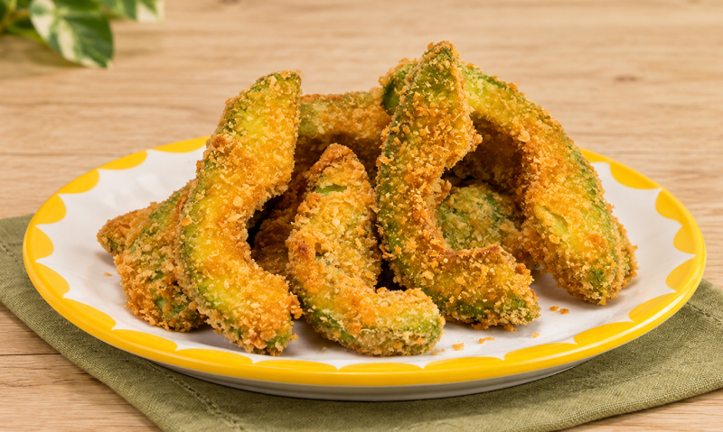
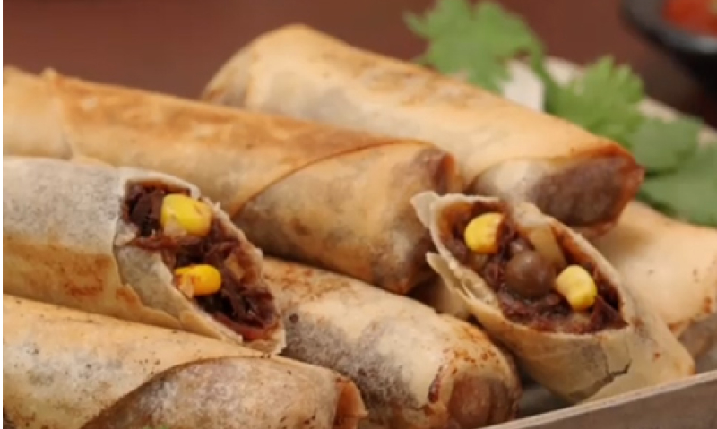
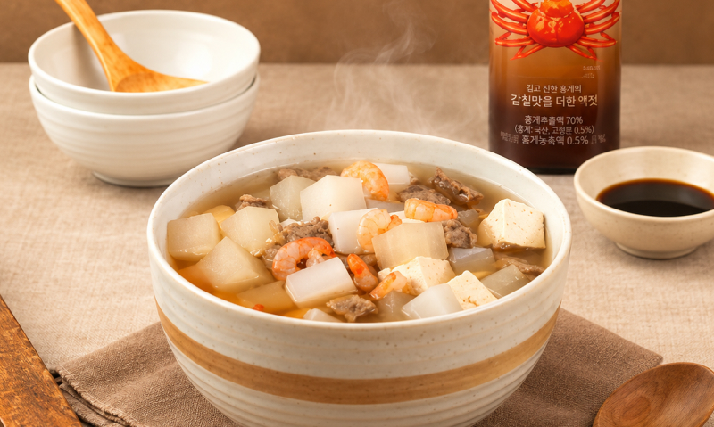

SAJO RECIPE사조레시피
오늘도 맛있는 한 끼,
같이 만들어볼까요?
바삭한 간식부터 따뜻한 국물까지.
사조레시피로 우리 집 식탁을 조금 더 맛있게!
오늘은 어떤 요리를 해볼까요?

간편 디저트 · 홈베이킹 한입베이커리
오븐 없이도 바삭하게. 집에서 즐기는 작은 베이커리.
- 조리방식
- 에어프라이어
- 조리포인트
- 180℃ · 약 12분
차근차근 준비해요
준비 재료
- 한입베이커리
- 애플파이 / 슈크림 / 크림치즈
- 에어프라이어 또는 오븐
- 조리 도구
T = 큰술 · 원물에 분량이 없는 재료는 필요량으로 표기했습니다.
이렇게 만들어요
만드는 순서
-
01
먼저 예열해주세요
에어프라이어를 180℃로 미리 예열합니다.
-
02
냉동 상태로 넣어주세요
해동하지 않은 제품을 겹치지 않도록 바스켓에 놓습니다.
-
03
바삭하게 구워주세요
180℃에서 약 12분간 조리하면 간편한 홈베이커리가 완성됩니다.
파이가 부풀 수 있으니 제품 사이에 여유 공간을 두세요.

바삭한 간식 · 튀김요리 아보카도튀김
부드러운 아보카도와 고소한 치즈 튀김옷의 만남.
- 조리방식
- 튀김
- 조리포인트
- 180℃ · 약 10분
차근차근 준비해요
준비 재료
- 아보카도
- 2개
- 빵가루
- 1컵
- 파마산 치즈
- 5T
- 밀가루 · 달걀
- 튀김옷용
- 소금 · 후추
- 밑간용
- 해표 바삭요리유
- 튀김용
T = 큰술 · 원물에 분량이 없는 재료는 필요량으로 표기했습니다.
이렇게 만들어요
만드는 순서
-
01
아보카도 손질하기
아보카도를 약 2cm 두께로 썰고 소금과 후추로 밑간합니다.
-
02
치즈 빵가루 준비하기
빵가루 1컵에 파마산 치즈 5T를 섞습니다.
-
03
튀김옷 입히기
밀가루, 달걀물, 치즈 빵가루 순서로 아보카도에 입힙니다.
-
04
노릇하게 튀기기
해표 바삭요리유를 180℃로 예열해 약 10분간 튀깁니다.
원문에서는 단단하고 덜 익은 아보카도를 사용합니다.

든든한 간식 · 참치요리 짜장참치 춘권
짜장참치와 옥수수, 치즈를 담아 바삭하게 즐기는 한 입.
- 조리방식
- 에어프라이어
- 조리포인트
- 180℃ · 약 12분
차근차근 준비해요
준비 재료
- 사조 짜장참치
- 2캔
- 스위트콘
- 3T
- 모차렐라 치즈
- 1T
- 춘권피
- 필요량
- 식용유
- 튀김용
- 칠리 소스
- 곁들임
T = 큰술 · 원물에 분량이 없는 재료는 필요량으로 표기했습니다.
이렇게 만들어요
만드는 순서
-
01
속 재료 섞기
볼에 짜장참치 2캔, 스위트콘 3T, 모차렐라 치즈 1T를 넣고 섞습니다.
-
02
춘권 말기
춘권피에 준비한 속 재료를 올리고 말아줍니다.
-
03
바삭하게 튀기기
팬에 식용유를 두르고 춘권을 노릇하게 튀겨 완성합니다.
칠리 소스를 곁들여 더욱 맛있게 즐겨보세요.

따뜻한 한 그릇 · 국물요리 홍게액 명절탕국
소고기와 무에 홍게액의 감칠맛을 더한 깊고 담백한 국물.
- 조리방식
- 냄비 조리
- 조리포인트
- 육수 2L
차근차근 준비해요
준비 재료
- 국거리 소고기 · 무
- 필요량
- 찌개용 두부 · 곤약 · 새우살
- 필요량
- 다시팩으로 만든 육수
- 2L
- 사조 홍게액
- 2T
- 국간장
- 2T
- 참기름
- 볶음용
T = 큰술 · 원물에 분량이 없는 재료는 필요량으로 표기했습니다.
이렇게 만들어요
만드는 순서
-
01
재료 썰기
무와 곤약, 두부를 주사위 모양으로 썰어 준비합니다.
-
02
소고기와 무 볶기
참기름에 소고기를 볶고 핏기가 사라지면 무를 넣어 투명해질 때까지 볶습니다.
-
03
육수 넣고 끓이기
육수 2L와 곤약, 두부, 새우를 넣고 약 10분간 끓입니다.
-
04
감칠맛 더하기
홍게액 2T와 국간장 2T로 간을 맞추고 한소끔 더 끓입니다.
사조 홍게액으로 국물에 깊은 풍미를 더해보세요.